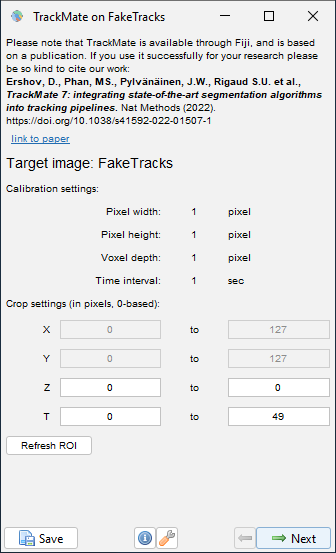
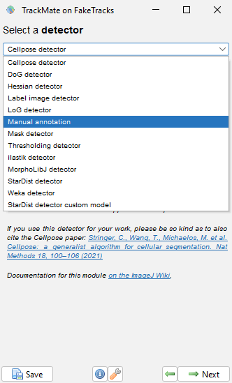

Image Time Series Analysis#
Lab authors: Hunter Elliott, Damian Dalle Nogare, Florian Jug, and Beth Cimini .
This file last updated 2026-04-16.
Part 1: Photobleaching#
Learning Objectives#
Apply and scrutinize photobleach correction
Double-normalized FRAP analysis
Lab Data in this folder (Time_Series)
Remember to unzip the data folder after downloading.
Bleach Correction#
In this portion of the lab, you will compensate for photobleaching by fitting an exponential model to the decaying fluorescence intensity, and then correcting for this decay.
Load the data:
Go to folder
Time_Series > BleachCorrectionLoad
TRITCinto Fiji by dragging the folder into the Fiji window (click yes when asked to open as a stack, but leave the checkboxes unchecked).
Apply Fiji’s built-in photobleach correction plugin
Image > Adjust > Bleach CorrectionCorrection Method: Exponential Fit. Press OK.
This plugin outputs a corrected image as well the fitted exponential decay. Since you have not selected an ROI it is using the average intensity in the entire image to perform the correction. Have a look at the corrected image: does it look like what you would expect?
You can select a region and measure its intensity over time by drawing an ROI and then going to
Image > Stacks > Plot Z Axis Profile(since there’s no Z axis this will actually plot a profile over time). Make a measurement like this of the center of a nucleus as well as the background. What do you see?Now, re-load the original dataset and select an ROI of a nucleus. Be sure it stays on the nucleus during the entire time series! Now perform the photobleach correction again. What do you see now? Why is this? What is the “right” way to photobleach correct these images?
Tip
You can easily compare two plot in Fiji by plotting them together on the same window. In the plot window, go to Data > Add from Plot... and select the data that you want to add to your current plot.
Make a note of the decay rate (parameter ‘b’) from the exponential fit.
Repeat for the
FITCfolder. Which image is bleaching faster?How well does the correction work on the FITC channel? Do we need to select an ROI here? Why or why not?
We now have approximately the same average intensity at the end of the FITC time series. Is the SNR the same at the beginning and end? Does the photobleach correction affect the SNR?
FRAP#
In this lab we will be using a FRAP plugin for Fiji
from the University of Wisconsin. If not already installed on your copy of Fiji, add it via the FRAP-Tools
update site (as before, access this in the Help-> Update -> Manage Update Sites menus. It has a good short set
of instructions here, but we will tell you here what you need to do!
Load the data:
FRAP/widefield_actin_FRAP.dv(Or use your own if you prefer)Create an ROI over the square bleached region. Add it to the ROI Manager (press ‘t’).
Plot the intensity in this region over time (
Image > Stacks > Plot Z-axis Profile)Does the intensity recover to a stable value?
Could we use a photobleaching correction like in the previous exercise? Why or why not?
Now we will run the FRAP plugin. You can find this under the Analyze menu, under Analyze->FRAP->FRAP Analysis. This is going to apply a similar analysis that you did above: photobleach correction, and then exponential fitting, but it will do it using a double-normalization approach.
First, perform a uniform background subtraction on your images by measuring the mean intensity in a region of the background and then going to
Process > Math > Subtract. Why do we want to do a uniform subtraction rather than e.g. a rolling ball?You will need to have three ROIs in the ROI Manager. One for the square bleached region (which you should already have!), a second ROI for a non-bleached region that has signal, and an ROI that sits in the background. Make sure to add them in that order
Launch the FRAP Profiler plugin (
Analyze->FRAP->FRAP Analysis).Enter the correct time interval, so that your recovery rate is in the correct units. Leave all other settings the same, except unchecking the “Close all window” button.
Run first with a single exponential. Look at the windows created- how well fit was your result? Do you understand what each one is showing?
Re-name the created results folder, indicating it’s a single fit (the important thing is just to rename it so not overwritten in the next step!)
Re-run the plugin with double exponential. Is the fit better? A double exponential models a two step process, e.g., fast but weak association of the molecule of interest, followed by slower stronger association.
What is the % mobile?
If you’re doing well on time, try again with the file
33108 SU295 try1.tifimage!
Part 2: Tracking#
Learning Objectives#
Overview#
Tracking is an unsolved problem. It can be easy, but it usually is not. If you need to reach flawless results, you have to curate manually.
This being said, manual tracking is very time consuming and boring/annoying. Hence, we will be exploring semi-automatic tracking regimes and also see how automated results can then be loaded for manual curation.
More specifically, we will get to know Trackmate and learn more about ilastik. Trackmate is a very popular Fiji plugin designed to deal with all kinds of tracking data, and is well and frequently maintained.
We know ilastik already from other exercises, but today we will explore some of ilastik’s tracking features. The automated tracking in ilastik is quite involved. Some key ideas we discussed in the lecture.
Note
This lab is intended to be interactive. If you find something cool… don’t hold back… share it with others. These tools are rather complex and we will certainly not be able to see all their features.
Tracking in Trackmate#
We will start with a simple test dataset. Open the “Tracks for Trackmate (807k)” image from
File > Open Samples > Tracks for Trackmate (807k)
This is 128x128 stack of 50 frames. Scroll through the image stack using the dimension slider. What do you see?
We will first walk through trackmate step-by-step using this simple example.
Open Trackmate using
Plugins > Tracking > Trackmate
You should see a window like this
{kind=link}

Make sure the Target Image is set to “FakeTracks”.
Click “Next”
In this next screen, we have to tell trackmate which detector to use to find the objects in the image. We will use some of these more advanced options later, but for these simple spots, we can use the Difference of Gaussian (DoG) model. This is particularly well suited to detect small, roundish things.
{kind=link}

Next we need to estimate our spot size. Zoom into the image and measure one of the bright spots we would like to track (HINT: use the line tool).
Next, we need to filter based on the quality of the detection. You will notice on the bottom right of the image a few spots that do not move, and are probably artifacts (or at least things that we do not wish to track in this case)
TASK: Find a quality setting that includes the moving spots, but not the weaker, stationary spots. (HINT: You can use the “Preview” button to preview your current settings on the frame). Apply the preview to a few different frames to make sure you’ve detected the moving spots accuratley. Detected objects will be circled with individual ROIs.
Click the “Next” button to perform the detection.
You will see a screen with some summary statistics for the detection.
Tracking in ilastik#
Please go to the tracking documentation for ilastik and follow the instructions.
You can download plenty of example datasets from the ilastik website, although it can be a bit slow.
If so, you can find the same examples in the Lab Data Share under Time_Series/Tracking/ilastik_tracking_projects (note that each one is a folder containing several files):
2D+t tracking example for ilastik
3D+t tracking example for ilastik
The 2D example will be way faster to work with, but please choose either of the two. After the download is completed, unzip the file and open the project file “conservationTracking.ilp” in ilastik (Project > Open project). The previous steps are done, so you can just hit track!
Tip
Please collect some screenshots or remember what you liked most. Be prepared to show the coolest thing you found out tomorrow morning. Some of you will be volunteered to share their findings… ;)
Some things to try after you start feeling comfortable with ilastik. There is much more interesting stuff to explore. Here some inspiration:
For the 2D+t example…
Can you spot some cells in the last time-point that are actually mergers of more than 2 cells? Can you change this somehow and make ilastik also detect mergers of more then 2 objects?
Please play with the individual steps and observe the many image layers. Which one might be particularly useful? When?
For the 3D+t example…
How long did it take to track automatically? Is there a way to speed this up? (Ask the online manual…)
If you want to export the result of your tracking, you can do so in the Tracking Result Export tab.
Choose ‘Tracking Result’ as your source.
Go to
Choose Image Export Settings...and choose a suitable format. The default.h5format cannot be easily read in Fiji, maybe try.tif sequence(because this is time lapse data). Also choose the output directory and how the output images should be named.
Tip
Ilastik has some useful terms that make naming files easy:
{dataset_dir}replaces the full path to where your input data is stored{nickname}replaces the name of the file being processed (excluding extension){result_type}replaces the type of result you’re exporting (in this case it would be ‘Tracking_result’){slice_index}is the index for the frame (or slice if this was 3D) being exported (only for image sequence exports)
You can learn more about the export setting for Ilastik from their documentation.
Tracking with btrack in napari#
In napari, there is a quite capable plugin for object tracking called btrack.
Let us install it and then use it.
Installation of btrack and napari from scratch
Open a new Anaconda Prompt and install all we need by executing…
conda create -y -n btrack -c conda-forge python=3.11conda activate btrackpip install btrack[napari]conda install -y -c conda-forge napari pyqt
Using btrack to track objects we segmented
Next, we need a dataset to track. Actually, we need not only a dataset, we need data that is segmented. Since we learned about segmentation before, here we will simply use one of the btrack example datasets. You can find a file called
segmented_nuclei.tifit in the folderbtrack_masksin the Lab Data share.Start btrack by starting napari (execute
naparifrom within the btrack conda environment we installed above). (It may take a coupel of minutes on the first launch!)Start btrack via
Plugins > Track (btrack).Drag and drop the masks file into napari.
Warning
Napari does not recognize this tiff file as labels. You must manually convert to labels by right clicking on the layer and select
Convert to labels.In the btrack side-bar, select the segmentation masks in the freshly coverted labels layer and click on
Track.Since this is one of the canned examples of btrack, the result is naturally quite good. If you have any labels for any other dataset - try it!
The real work starts now: after objects are tracked, how would we continue analyzing these tracks?
Tip
This blog post is a good place to start for learning about the basics of tracking in napari. More new napari tracking plugins are being released all the time - 21 as of this course in 2026, including cool ones like trackastra and ultrack
Bonus - photobleaching in a harder image#
Try the photobleaching exercise, but with the provided H2B_incomplete_recovery_challenge.tif data - what preprocessing step(s) do you think you might need to do to the data to get an accurate measurement?